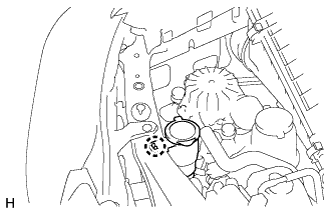

WASHER LEVEL WARNING SWITCH > REMOVAL |
| 1. REMOVE WASHER INLET SUB-ASSEMBLY |
|  |
Detach the claw and remove the washer inlet sub-assembly.
| 2. REMOVE WINDSHIELD WASHER JAR ASSEMBLY |
Remove the windshield washer jar assembly (Click here).
| 3. REMOVE WASHER JAR PROTECTOR |
Detach the 3 claws and remove the washer jar protector.
| 4. REMOVE LEVEL WARNING SWITCH ASSEMBLY |
Disconnect the connector.
Remove the level warning switch assembly from the packing of the washer jar.